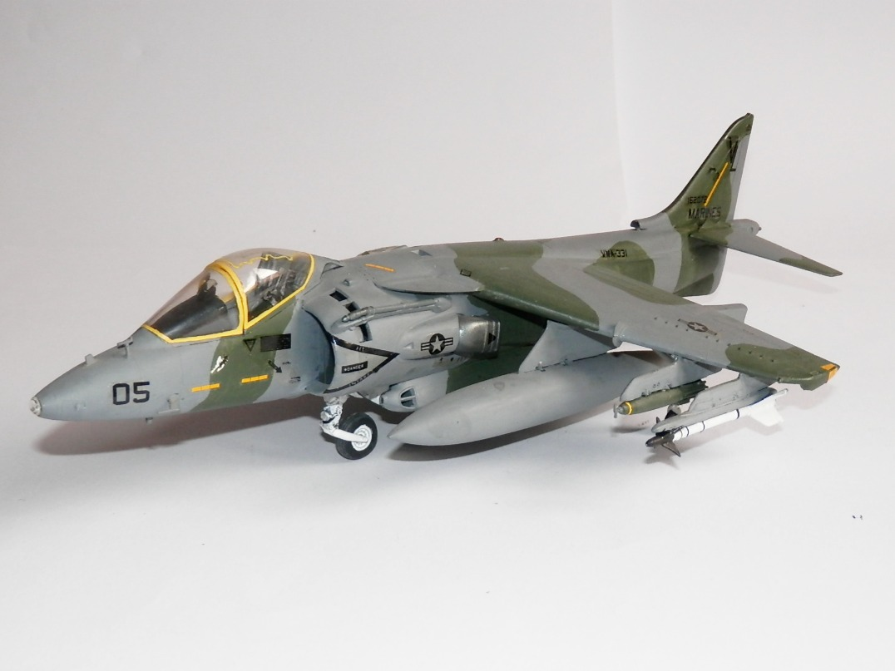
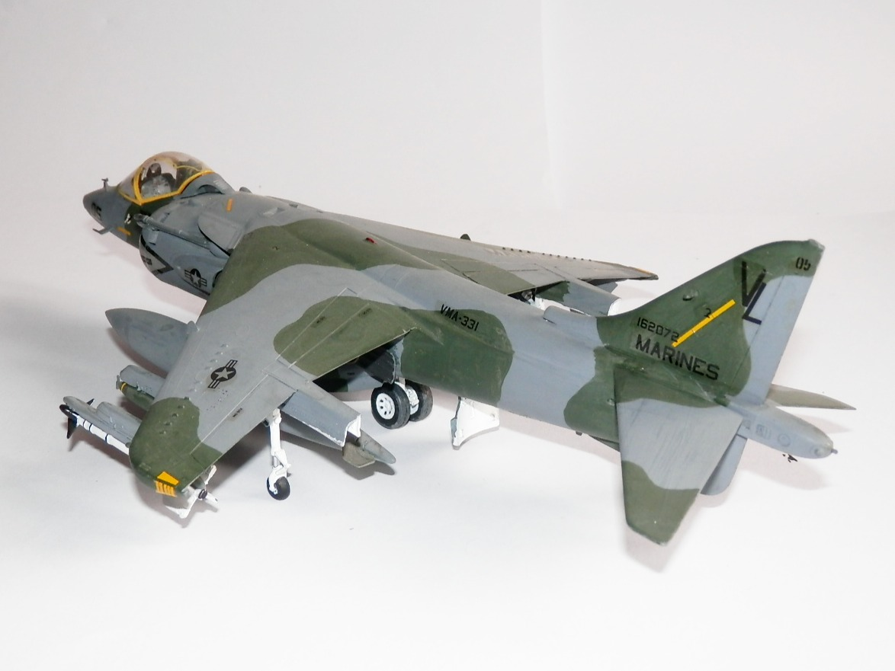

Aerei · scale model archive
McDonnell Douglas AV-8B Harrier
McDonnell Douglas AV-8B Harrier — Kit: Monogram, Scale: 1/48. VMA-331 Bumble Bees 152072 1984 Modified and improved version of the original Harrier,…

Photo gallery

English description
VMA-331 Bumble Bees 152072 1984
Modified and improved version of the original Harrier, sporting and interesting carbon fiber wing
Descrizione italiana
VMA-331 Bumble Bees, 152072, 1984. Versione modificata e migliorata dell’Harrier originale, con un’interessante ala in fibra di carbonio.